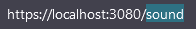

How to interact with clusters
Unify internal model works with DotDot ZCL clusters. More info on this in chapter 2 that describes how clusters are implemented in Unify and how to use them.
ZPC attributes are not exposed to MQTT bus by default. To be able to interact with ZPC with the MQTT broker we must map ZPC values to cluster attributes.
Z-Wave Cluster Mapping Guidelines
When implementing a Z-Wave command class or updating a existing one, you have to make sure that the end user can interact with it through the MQTT broker.
The first step is to identify the existing clusters and try to map as much as you can to these. This is important as it will ensure compatibility with others protocols. For example, a Sound Switch device can be mapped to both OnOff cluster (to handle play/stop) and Level cluster (handle volume and tone). This way the Matter Bridge will be able to control this device without knowing the specifics of Z-Wave since they both use the same clusters.
Sometimes you may need to create a new cluster to handle specifics features. Not all ZCL cluster have the same features as Z-Wave command classes. For example, the most of the features of Fan Mode can be mapped to the Fan Control cluster but Z-Wave supports more Fan Modes than ZCL, so we need to create a new cluster to handle those specifics features.
Custom Cluster Implementation
This section will go through an example of how we can implement a custom Sound cluster that can go with the SoundSwitch Z-Wave command class.
Create the cluster XML file
The first thing to do is to create the .xml file that defines your
cluster. The syntax and the needed definitions are defined in the
README.md in the components/uic_dotdot/dotdot-xml folder.
The new custom cluster must have the Unify_ prefix name. We name
ours Unify_Sound.xml. The first thing we need to do is attribute an
ID to our custom cluster. The clusters ID and can be split into 2
ranges:
[0x0000…0xFBFF]: Official ZCL Clusters
[0xFC00…0xFFFF]: Proprietary clusters
Note
You should never change already attributed ID to keep the Unify Library compatible with subsequent version.
In Unify we use the range [0xFF00…0xFFFF] to create new clusters. Make
sure that your ID is not already taken by another cluster. You can
search the following pattern in the xml files : id="your_id" to
check if a cluster already defines your ID. Here we are using the id
FFA0 :
<zcl:cluster
xmlns:zcl="http://zigbee.org/zcl/clusters"
xmlns:xsi="http://www.w3.org/2001/XMLSchema-instance"
xmlns:type="http://zigbee.org/zcl/types"
xmlns:xi="http://www.w3.org/2001/XInclude"
xsi:schemaLocation="http://zigbee.org/zcl/clusters cluster.xsd http://zigbee.org/zcl/types type.xsd"
id="FFA0" revision="1" name="Sound">
<classification role="application" picsCode="LVL"/>
</zcl:cluster>
Note
picsCode (Protocol Implementation Conformance Statement) field can be ignored safely here.
Then we need to define which attribute we need and the associated command. For our example we would like :
Attributes
IsPlaying: Status of if a sound is playing or notSoundLevel: Current sound levelToneID: The current tone IDToneDescription: Tone descriptionToneDuration: Tone duration
Commands
PlayDefault: Play the current configured soundPlaySound: Play a specific soundChangeVolume: Change the used volumeChangeToneChange the used tone
The attributes can be constrained if needed (min, max, …). You can find
information about this in the associated README.md in the
components/uic_dotdot/dotdot-xml folder :
<server>
<attributes>
<attribute id="0000" name="IsPlaying" type="bool" max="1" required="true" reportRequired="true" default="0"/>
<attribute id="0001" name="SoundLevel" type="uint8" reportRequired="true" default="0">
<restriction>
<type:minInclusiveRef ref="MinLevel" />
<type:maxInclusiveRef ref="MaxLevel" />
</restriction>
</attribute>
<attribute id="0002" name="MinLevel" type="uint8" default="0">
<restriction>
<type:maxInclusiveRef ref="MaxLevel" />
</restriction>
</attribute>
<attribute id="0003" name="MaxLevel" type="uint8" max="100" default="100">
<restriction>
<type:minInclusiveRef ref="MinLevel" />
</restriction>
</attribute>
<attribute id="0004" name="ToneID" type="uint8" default="1">
<restriction>
<type:maxInclusiveRef ref="MaxTone" />
</restriction>
</attribute>
<attribute id="0005" name="MaxTone" type="uint8"/>
<attribute id="0006" name="ToneDescription" type="string"/>
<attribute id="0007" name="ToneDuration" type="uint16""/>
</attributes>
<commands>
</commands>
</server>
The commands can also have parameters if needed :
<server>
<attributes>
</attributes>
<commands>
<command id="00" name="PlayDefault" required="true" />
<command id="01" name="PlaySound" required="true">
<fields>
<field name="Volume" type="uint8" />
<field name="ToneID" type="uint8" />
</fields>
</command>
<command id="02" name="ChangeVolume" required="true">
<fields>
<field name="Volume" type="uint8" />
</fields>
</command>
<command id="03" name="ChangeTone" required="true">
<fields>
<field name="ToneID" type="uint8" />
</fields>
</command>
</commands>
</server>
The full implementation of our custom cluster can be found below :
<?xml version="1.0"?>
<!--
Zigbee Alliance owns the copyright to the text and content displayed or
included in this document (including in PDF, XML files and other formats) in
all forms of media, which copyright is protected by the copyright laws of the
United States and by international treaties. Full text of licensing terms
applicable to this document can be found in the LICENSE.md file.
-->
<zcl:cluster
xmlns:zcl="http://zigbee.org/zcl/clusters"
xmlns:xsi="http://www.w3.org/2001/XMLSchema-instance"
xmlns:type="http://zigbee.org/zcl/types"
xmlns:xi="http://www.w3.org/2001/XInclude"
xsi:schemaLocation="http://zigbee.org/zcl/clusters cluster.xsd http://zigbee.org/zcl/types type.xsd"
id="FFA0" revision="1" name="Sound">
<classification role="application" picsCode="LVL"/>
<server>
<attributes>
<attribute id="0000" name="IsPlaying" type="bool" max="1" required="true" reportRequired="true" default="0"/>
<attribute id="0001" name="Volume" type="uint8" reportRequired="true" default="0" required="true">
<restriction>
<type:minInclusiveRef ref="MinLevel" />
<type:maxInclusiveRef ref="MaxLevel" />
</restriction>
</attribute>
<attribute id="0002" name="MinLevel" type="uint8" default="0">
<restriction>
<type:maxInclusiveRef ref="MaxLevel" />
</restriction>
</attribute>
<attribute id="0003" name="MaxLevel" type="uint8" max="100" default="100">
<restriction>
<type:minInclusiveRef ref="MinLevel" />
</restriction>
</attribute>
<attribute id="0004" name="ToneID" type="uint8" default="1"/>
<restriction>
<type:maxInclusiveRef ref="MaxTone" />
</restriction>
<attribute id="0005" name="MaxTone" type="uint8" default="30"/>
<attribute id="0006" name="ToneDescription" type="string" default=""/>
<attribute id="0007" name="ToneDuration" type="uint16" default="0"/>
</attributes>
<commands>
<command id="00" name="PlayDefault"/>
<command id="01" name="PlaySound">
<fields>
<field name="Volume" type="uint8" />
<field name="ToneID" type="uint8" />
</fields>
</command>
<command id="02" name="Stop"/>
<command id="03" name="ChangeVolume">
<fields>
<field name="Volume" type="uint8" />
</fields>
</command>
<command id="04" name="ChangeTone" required="true">
<fields>
<field name="ToneID" type="uint8" />
</fields>
</command>
</commands>
</server>
</zcl:cluster>
Once the cluster is defined, you’ll need to include it in the
library.xml file. At the end you can add the line :
<!--... -->
<xi:include href="Unify_ApplicationMonitoring.xml" parse="xml"/>
<!--Here : -->
<xi:include href="Unify_Sound.xml" parse="xml"/>
</zcl:library>
Command logic and callbacks
ZAP generation
The clusters logics are generated by the ZAP tool. The ZAP generation is disabled by default since it only needs to be run once to have all the files we need.
We need to enable it to generated our files associated with our custom
cluster. To do so, set the ZAP_GENERATE CMake variable to ON.
You can do that either with the pseudo-gui ccmake . in your build
folder or with the cmake command argument -DZAP_GENERATE=ON.
Once the CMake argument is set you can call ninja on your build
folder and the necessary file will be generated. You can check ZAP logs
in the build process or see with git status if files have changed in the
zap-generated folders:
Changes not staged for commit:
(use "git add <file>..." to update what will be committed)
(use "git restore <file>..." to discard changes in working directory)
modified: ../applications/dev_ui/dev_gui/zap-generated/src/cluster-types/cluster-type-attributes.ts
modified: ../components/uic_dotdot/dotdot-xml/library.xml
modified: ../components/uic_dotdot/zap-generated/include/dotdot_attribute_id_definitions.h
modified: ../components/uic_dotdot/zap-generated/include/dotdot_cluster_command_id_definitions.h
modified: ../components/uic_dotdot/zap-generated/include/dotdot_cluster_id_definitions.h
modified: ../components/uic_dotdot/zap-generated/readme_ucl_mqtt_reference.md
modified: ../components/uic_dotdot/zap-generated/src/dotdot_attribute_id_definitions.c
modified: ../components/uic_dotdot/zap-generated/src/dotdot_cluster_id_definitions.c
modified: ../components/uic_dotdot_mqtt/zap-generated/include/dotdot_mqtt.h
modified: ../components/uic_dotdot_mqtt/zap-generated/include/dotdot_mqtt_attributes.h
modified: ../components/uic_dotdot_mqtt/zap-generated/include/dotdot_mqtt_generated_commands.h
modified: ../components/uic_dotdot_mqtt/zap-generated/include/dotdot_mqtt_group_commands.h
modified: ../components/uic_dotdot_mqtt/zap-generated/include/dotdot_mqtt_send_commands.h
modified: ../components/uic_dotdot_mqtt/zap-generated/include/dotdot_mqtt_supported_generated_commands.h
modified: ../components/uic_dotdot_mqtt/zap-generated/src/dotdot_mqtt.cpp
modified: ../components/uic_dotdot_mqtt/zap-generated/src/dotdot_mqtt.hpp
// And more...
Note
Good practice is to commit the generated code in it’s own commit. This way we can update it or delete it based on our needs.
It makes easier to merge multiples branches that generate code.
Command logic implementation
We now need to implement the commands logic now that they are defined.
This is done in components/unify_dotdot_attribute_store/src. The
naming convention here is
unify_dotdot_attribute_store_command_callbacks_{cluster_name} where
cluster_name is the name of the cluster.
We create the header and the source file in this folder :
unify_dotdot_attribute_store_command_callbacks_unify_sound.h and
unify_dotdot_attribute_store_command_callbacks_unify_sound.c.
The header is straightforward, some doxygen tags and we define the initialize function that will be called later:
/**
* @defgroup on_off_cluster_mapper Unify Sound Cluster Mapper
* @ingroup dotdot_mapper
* @brief Maps Unify Sound Cluster incoming Commands to attribute modifications.
*
* @{
*/
#ifndef UNIFY_SOUND_CLUSTER_MAPPER_H
#define UNIFY_SOUND_CLUSTER_MAPPER_H
#ifdef __cplusplus
extern "C" {
#endif
/**
* @brief Initialize the Unify Sound cluster mapper
*
*/
sl_status_t unify_sound_cluster_mapper_init(void);
#ifdef __cplusplus
}
#endif
#endif //UNIFY_SOUND_CLUSTER_MAPPER_H
/** @} end unify_cluster_mapper */
The base source file include some definition that will be used later :
#include "unify_dotdot_attribute_store_command_callbacks.h"
#include "unify_dotdot_attribute_store_command_callbacks_unify_sound.h"
#include "unify_dotdot_attribute_store_configuration.h"
#include "unify_dotdot_attribute_store_helpers.h"
#include "unify_dotdot_defined_attribute_types.h"
#include "attribute_timeouts.h"
#include "dotdot_mqtt_send_commands.h"
// Other Unify components.
#include "dotdot_mqtt.h"
#include "sl_log.h"
#define LOG_TAG "unify_dotdot_attribute_store_unify_sound_commands_callbacks"
////////////////////////////////////////////////////////////////////////////////
// Internal component function that register callbacks to DotDot MQTT
////////////////////////////////////////////////////////////////////////////////
sl_status_t unify_sound_cluster_mapper_init()
{
// Unify Sound Commands.
sl_log_debug(LOG_TAG, "Unify Sound Cluster mapper initialization\n");
return SL_STATUS_OK;
}
This function must be registered in the main callback function
unify_dotdot_attribute_store_command_callbacks_init defined in
components/unify_dotdot_attribute_store/src/unify_dotdot_attribute_store_command_callbacks.c
:
// ...
#include "unify_dotdot_attribute_store_command_callbacks_unify_sound.h"
sl_status_t unify_dotdot_attribute_store_command_callbacks_init()
{
// ...
unify_sound_cluster_mapper_init();
return SL_STATUS_OK;
}
Now that it is registered, we can start to implement the commands logic.
In the unify_sound_cluster_mapper_init we call
uic_mqtt_dotdot_sound_xxx_callback_set() function. These functions
call callbacks when the given command is called. For example
uic_mqtt_dotdot_sound_play_default_callback_set(&unify_sound_play_default)
says to unify to call unify_sound_play_default when the
PlayDefault command is invoked.
Note
Most of the function called here are generated by ZAP from the XML definition. See the useful commands section to invoke the command to force regeneration of the code if you changed something in the XML cluster.
The callback needs at least 3 arguments + the arguments of the function.
The types are defined in
components/uic_dotdot_mqtt/zap-generated/include/dotdot_mqtt.h :
typedef sl_status_t (*uic_mqtt_dotdot_sound_play_default_callback_t)(
dotdot_unid_t unid,
dotdot_endpoint_id_t endpoint,
uic_mqtt_dotdot_callback_call_type_t call_type
);
So our callback function can look like this:
sl_status_t unify_sound_play_default(dotdot_unid_t unid,
dotdot_endpoint_id_t endpoint,
uic_mqtt_dotdot_callback_call_type_t call_type)
{
return SL_STATUS_OK;
}
unid : Unify UID for which the command was invoked.
endpoint : Unify endpoint identifier for which the command was invoked.
call_type : Type of call. This argument can be used to verify if the command is compatible with the current model definition.
To translate the unid and endpoint argument into a node ID of the
attribute store you can use
unify_dotdot_attributes_get_endpoint_node() :
attribute_store_node_t endpoint_node
= unify_dotdot_attributes_get_endpoint_node()(unid, endpoint);
To have our command published in the SupportedCommand MQTT topic, we
have to verify the call type and return SL_STATUS_OK if all is ok,
SL_STATUS_FAIL otherwise. The more common verification is to check
if our attributes are present in the attribute store. This can be done
with dotdot_is_supported_sound_xxx(unid, endpoint) generated
function.
For our PlayDefault function we expect the attribute store to have 3
attributes defined :
Volume: The volume of the toneToneID: The ID of the toneIsPlaying: The status of current tone
The user may want to disable the automatic deduction of supported
commands so it’s good practice to check the return value of
is_automatic_deduction_of_supported_commands_enabled(). Our callback
looks like this:
sl_status_t unify_sound_play_default(dotdot_unid_t unid,
dotdot_endpoint_id_t endpoint,
uic_mqtt_dotdot_callback_call_type_t call_type)
{
// First check the call type. If this is a support check support call,
// we check the attributes
if (call_type == UIC_MQTT_DOTDOT_CALLBACK_TYPE_SUPPORT_CHECK) {
// Check user option automatic_deduction_of_supported_commands
if (is_automatic_deduction_of_supported_commands_enabled()) {
// We check the result of existence of volume, toneid and isplaying attributes
return (dotdot_is_supported_sound_volume(unid, endpoint) &&
dotdot_is_supported_sound_toneid(unid, endpoint) &&
dotdot_is_supported_sound_is_playing(unid, endpoint))
? SL_STATUS_OK
: SL_STATUS_FAIL;
} else {
return SL_STATUS_FAIL;
}
}
// If we are in command invocation, we only need to set our attribute to the value we need.
// Here we only modify IsPlaying and we are assuming that toneID and volume are correctly defined.
return dotdot_set_sound_is_playing(unid, endpoint, DESIRED_ATTRIBUTE, true);
}
We can check if our newly supported command is correctly defined by
using mosquitto_sub. We assume that your MQTT booker is up and
running and you at least have one endpoint called ep0 that support your
new custom cluster.
UAM files binding
Now that you have your cluster defined and attributes updated, you’ll have to create an .uam file to bind your Z-Wave attributes to your ZCL attributes.
Note
More info on uam files can be found at Implement new Z-Wave classes
// Sound Switch Command Class
def zwSOUND_SWITCH_TONE_PLAY 0x7908
def zwSOUND_SWITCH_CONFIGURED_VOLUME 0x7902
def zwSOUND_SWITCH_TONE_IDENTIFIER 0x7903
def zwSOUND_SWITCH_MAX_TONE 0x7904
def zwSOUND_SWITCH_TONE_INFO_ROOT 0x7905
def zwSOUND_SWITCH_TONE_INFO_DURATION 0x7906
def zwSOUND_SWITCH_TONE_INFO_DESCRIPTION 0x7907
// ZCL OnOff Cluster
def zbIS_PLAYING 0xFFA00000
def zbSOUND_LEVEL 0xFFA00001
def zbSOUND_LEVEL_MIN 0xFFA00002
def zbSOUND_LEVEL_MAX 0xFFA00003
def zbSOUND_TONE_ID 0xFFA00004
def zbSOUND_MAX_TONE 0xFFA00005
def zbSOUND_TONE_DESCRIPTION 0xFFA00006
def zbSOUND_TONE_DURATION 0xFFA00007
// Constants
def min_level 1
def max_level 100
// 30 is higher priority than other cluster switches
scope 30 chain_reaction(0) {
// Linking attributes zwave -> zigbee (note : 0 is stop playing)
r'zbIS_PLAYING = if (r'zwSOUND_SWITCH_TONE_PLAY != 0) 1 0
d'zbIS_PLAYING = if (d'zwSOUND_SWITCH_TONE_PLAY != 0) 1 0
r'zbSOUND_LEVEL = r'zwSOUND_SWITCH_CONFIGURED_VOLUME
r'zbSOUND_LEVEL_MIN = if (e'zwSOUND_SWITCH_CONFIGURED_VOLUME) min_level undefined
r'zbSOUND_LEVEL_MAX = if (e'zwSOUND_SWITCH_CONFIGURED_VOLUME) max_level undefined
// Map Z-Wave readonly attributes to ZCL
r'zbSOUND_TONE_ID = r'zwSOUND_SWITCH_TONE_IDENTIFIER
// Can't bind string attributes here we must do it in the command class directly
// r'zbSOUND_TONE_DESCRIPTION = r'zwSOUND_SWITCH_TONE_INFO_ROOT.zwSOUND_SWITCH_TONE_INFO_DESCRIPTION
r'zbSOUND_TONE_DURATION = r'zwSOUND_SWITCH_TONE_INFO_ROOT.zwSOUND_SWITCH_TONE_INFO_DURATION
r'zbSOUND_MAX_TONE = r'zwSOUND_SWITCH_MAX_TONE
// Linking attributes zigbee -> zwave for commands
d'zwSOUND_SWITCH_TONE_PLAY = if (d'zbIS_PLAYING != 0) 1 0
r'zwSOUND_SWITCH_TONE_PLAY = if (r'zbIS_PLAYING != 0) 1 0
d'zwSOUND_SWITCH_CONFIGURED_VOLUME = d'zbSOUND_LEVEL
r'zwSOUND_SWITCH_CONFIGURED_VOLUME = r'zbSOUND_LEVEL
d'zwSOUND_SWITCH_TONE_IDENTIFIER = d'zbSOUND_TONE_ID
r'zwSOUND_SWITCH_TONE_IDENTIFIER = r'zbSOUND_TONE_ID
}
Sometimes UAM files are not enough for achieving the desired behavior. In this case UAM doesn’t support string values only numbers. To workaround that you can use a callback on your attribute and update the value directly in your controller/command class.
First, listen to all the changes for given attribute :
attribute_store_register_callback_by_type_and_state(
&zwave_command_class_sound_switch_on_tone_name_update,
ATTRIBUTE_COMMAND_CLASS_SOUND_SWITCH_TONE_INFO_NAME,
REPORTED_ATTRIBUTE);
Then map the new value to the ZCL value :
#define MAX_CHAR_SIZE 64
static void zwave_command_class_sound_switch_on_tone_name_update(
attribute_store_node_t updated_node, attribute_store_change_t change)
{
if (change == ATTRIBUTE_DELETED) {
return;
}
char tone_name[MAX_CHAR_SIZE];
attribute_store_get_reported_string(updated_node, tone_name, MAX_CHAR_SIZE);
if (strlen(tone_name) == 0) {
return;
}
attribute_store_node_t endpoint_node
= attribute_store_get_first_parent_with_type(updated_node,
ATTRIBUTE_ENDPOINT_ID);
attribute_store_node_t zcl_tone_name_node
= attribute_store_get_first_child_by_type(endpoint_node,
DOTDOT_ATTRIBUTE_ID_SOUND_TONE_DESCRIPTION);
if (zcl_tone_name_node == ATTRIBUTE_STORE_INVALID_NODE) {
attribute_store_add_node(endpoint_node, DOTDOT_ATTRIBUTE_ID_SOUND_TONE_DESCRIPTION);
}
attribute_store_set_reported_string(zcl_tone_name_node, tone_name);
}
You should now see something like this :
> mosquitto_sub -h 0.0.0.0 -p 1883 -t ucl/by-unid/+/ep0/Sound/SupportedCommands
{"value": ["PlayDefault", "ForceReadAttributes"]}
Integration with dev-ui
We may want to add those information to the dev UI to show-off its
capabilities. The first thing to do is to add the supported cluster in
the dev ui. In applications/dev_ui/dev_gui/zap/addon-helper.js add
your custom cluster at the end of the const supportedClusters array
:
const supportedClusters = [
"AoXLocator",
"AoXPositionEstimation",
// ...
"PowerConfiguration",
"Sound"
];
Run ninja again to generate the desired files.
Note
If you need to force a regeneration of the file because your cluster definition has changed check the useful commands section.
Then we have to add a page that represents our custom cluster. This is
done in the
applications/dev_ui/dev_gui/src/pages/base-clusters/cluster-view-overrides.tsx
:
Note
The icon library used here is located at https://react-icons.github.io/react-icons/. Don`t forgot to check license if you use something that is not in License.txt.
// ...
} as ClusterViewOverride,
Sound: {
ViewTable: [
{
Name: `Playing status`,
Value: (item: any) => item.Attributes?.IsPlaying?.Reported !== undefined ?
(item.Attributes.IsPlaying.Reported === true
? <Tooltip title="Playing"><span className="cursor-default"><RiIcons.RiPlayFill color="#28a745" /></span></Tooltip>
: <Tooltip title="Stoped"><span className="cursor-default"><RiIcons.RiPlayLine color="grey" /></span></Tooltip>)
: "-"
},
{
Name: `Tone description`,
Value: (item: any) => (item.Attributes?.ToneDescription?.Reported || item.Attributes?.ToneID?.Reported) !== undefined ?
(item.Attributes?.ToneDescription?.Reported || "No tone description") + " (" + (item.Attributes?.ToneID?.Reported || "-") + ")"
: "-"
},
{
Name: `Tone duration`,
Value: (item: any) => item.Attributes?.ToneDuration?.Reported || "-"
},
{
Name: `Volume`,
Value: (item: any) => item.Attributes?.Volume?.Reported || "-"
}
],
NodesTooltip: (endpoint: string, attr: any) => {
let state = (attr.ToneDescription?.Reported || "No tone description")
return (
<Tooltip title={`Endpoint ${endpoint}: Sound : ${state}`}>
<span className="cursor-default">
<Link to={`/sound`}>
<IoIcons.IoMdMusicalNotes/>
</Link>
</span>
</Tooltip>
)
},
NavbarItem: {
name: ClusterTypes.Sound,
title: 'Unify Custom Sound',
path: '/sound',
icon: <IoIcons.IoMdMusicalNotes/>,
cName: 'nav-text',
subMenu: SideMenu.Actuators
} as NavbarItem,
IsExpandable: true
} as ClusterViewOverride,
OnOff: {
// ...

ViewTable : The attributes that are displayed on the page.
Name (red) : Column name
Value (blue) (
item: any) : The values that are displayed in the cell. The attributes can be accessed withitem.Attributes

NodesTooltip (
endpoint: string, attr: any) : Cluster icon that are displayed next to endpoint in the Nodes page. You can control the icon behavior (tootip, action when clicked, …) and style.endpoint: string: Endpoint nameattr: any: Attributes object
NavbarItem : Control the navigation of your cluster page. Defines the route to access it, and can add a shortcut in the sub menu if needed.
name :
ClusterTypes.NameOfYourCluster. It’s very important to define this property correctly or the route to your cluster will not work. If not defined correctly you could break routes for other cluster as well.title : Displayed title of your cluster. Appears on top on your cluster page and in the sub menu.
path : define the route to your cluster page. If it not working please check that all the name properties are correctly defined. The routes are defined in
applications/dev_ui/dev_gui/src/App.tsx(~ line 282).
icon : Icon used in the sub menu
subMenu : The sub menu where your cluster will be under.


Miscellaneous
Run UI in Development Mode with Live Reload
You can serve the dev-gui locally and use the live reload feature to make some adjustment on the UI.
Generate the dev-ui with CMake to generate cluster files and
index.htmlCopy the following file into the root folder :
${BUILD_FOLDER}/applications/dev_ui/dev_gui/public/index.html->${SOURCE_FOLDER}/applications/dev_ui/dev_gui/public/index.html${BUILD_FOLDER}/applications/dev_ui/dev_gui/src/cluster-types->${SOURCE_FOLDER}/applications/dev_ui/dev_gui/src/cluster-types
Install nvm if your system doesn’t have Node 18
nvm install 18nvm use 18
In
${SOURCE_FOLDER}/applications/dev_ui/dev_gui/
npm install
Start the API :
npm run start-apiStart the front end :
npm run start
Useful Commands
Description |
Command |
|---|---|
Generate all zap files ( |
|
Force regeneration of XML cluster definitions |
|
Force regeneration of js/ts files ( |
|
Force regeneration of dev gui node package |
|